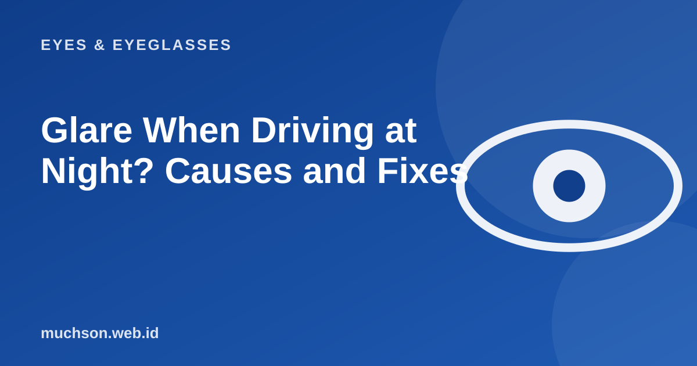

Home › Articles › Eyes & Eyeglasses
Eyes & EyeglassesGlare When Driving at Night? Causes and Fixes
Many drivers find their vision much worse at night: headlights spread into streaks of light and the road is hard to read. There are many causes, and some can be fixed with simple steps.

Why is night harder?
Text description of the diagram
- Pupils widen in the dark
- Light scatters in the lens and cornea
- Reflections on glass and lenses
- Blurry, doubled vision and tired eyes
then back to the first step.
Common causes
- The lens power is not right. Minus or cylinder that is under-corrected feels worse at night.
- Dirty or scratched lenses. Light scatters through scratches and fingerprints.
- No anti-reflective coating. Street lights and tail lights reflect off the lens.
- A dirty windscreen. A film of dust on the inside of the glass makes glare worse.
- Dry eyes or another eye condition, for example early cataract.
Steps you can try
Take note
If night glare gets worse in a short time, or comes with blurred vision and colours that look faded, see an eye doctor. It can be a sign of another condition that needs treatment.
About yellow night-driving glasses
Yellow-lensed "night" glasses advertised for driving have not been clearly shown to improve safety, and they can reduce the light reaching your eyes. It is better to focus on the right prescription, clean lenses and an anti-reflective coating.
FAQ
Do anti-reflective lenses help with night driving?
Yes, many users find lights more comfortable because reflections on the lens are reduced. Results differ from person to person.
Is it harder to drive at night with myopia?
If the minus is not fully corrected, yes. With the right glasses the effect is much smaller.
Is it still safe for me to drive at night?
If you feel uncomfortable or unsafe, avoid night driving and get your eyes checked. Safety comes first.